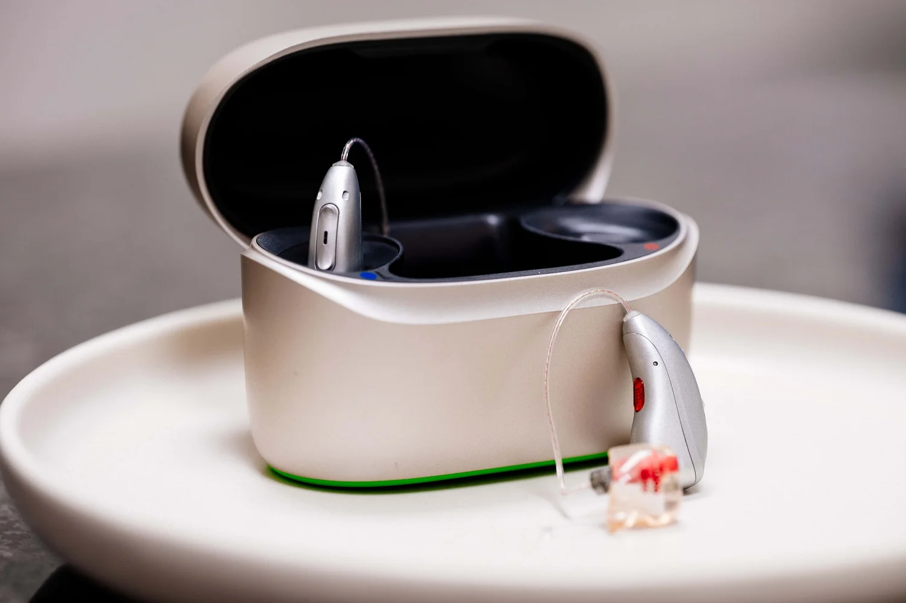
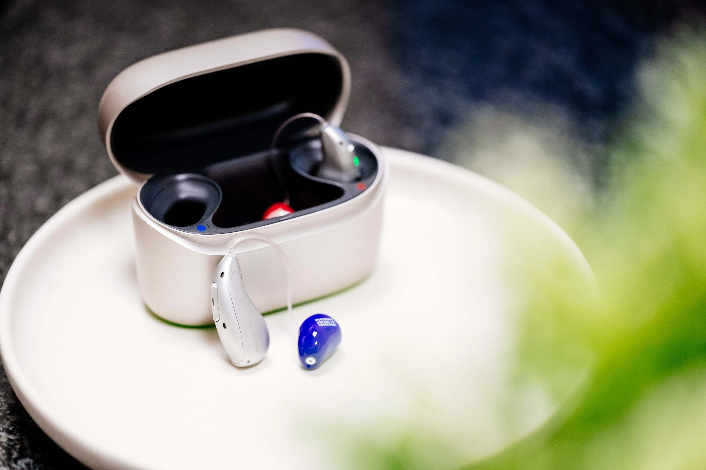
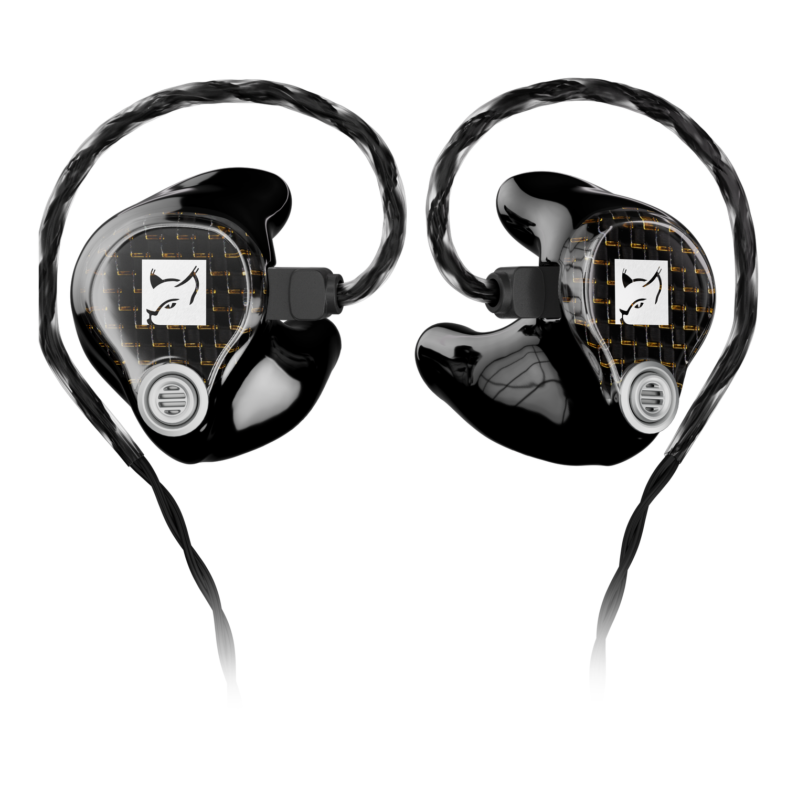

Hörgeräte
Ob unauffällig, Hightech oder Nulltarif — bei uns erhalten Sie das passende Hörgerät für Ihren Alltag.
Mehr zu Hörgeräten
Als inhabergeführtes Unternehmen legen wir besonderen Wert auf persönliche Nähe, Vertrauen und Verlässlichkeit — Werte, die wir tagtäglich leben und weitergeben.
Bei uns bekommen Sie mehr als nur Hörgeräte. Da die Hörakustik so viel mehr zu bieten hat, sind wir mit einem breiten Leistungsspektrum für Sie da: umfangreiche Hörsystemberatung und -anpassung, gezieltes Hörtraining, spezialisierte Hilfe bei Tinnitus sowie regelmäßige Nachsorge- und Servicetermine.
Hörakustik-Meisterservice, weit über den reinen Verkauf hinaus.

Ob unauffällig, Hightech oder Nulltarif — bei uns erhalten Sie das passende Hörgerät für Ihren Alltag.
Mehr zu Hörgeräten
Ob Freizeit, Beruf oder Kinder — Ihr individueller Gehörschutz für jede Situation.
Mehr zu Gehörschutz
Ob Gamer, Musikliebhaber oder Profi — mit individuellem In-Ear Monitoring bist du auf der besten Seite.
Mehr zu In-Ear MonitoringAm Brückentor 15, 56727 Mayen